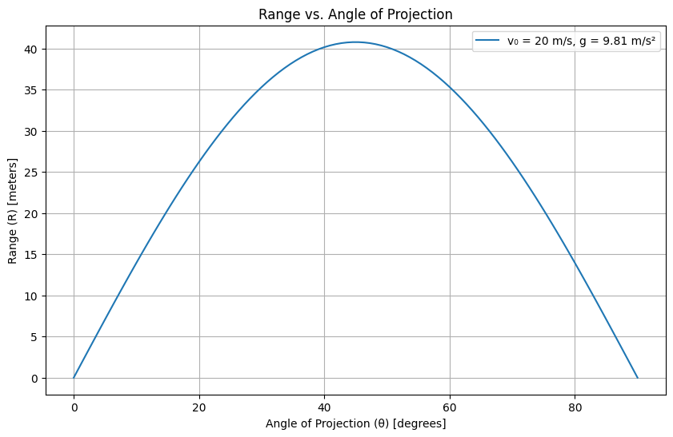

Here’s the corrected version with proper LaTeX rendering for mathematical equations and a Python code block for clarity:
Mechanics: Investigating the Range as a Function of the Angle of Projection
1. Theoretical Foundation
Projectile motion is governed by Newton's second law of motion, where the only force acting on the projectile (neglecting air resistance) is gravity. The key assumptions are:
- Constant gravitational acceleration (\( \vec{g} \)) acting downward.
- No air resistance or other external forces.
- Flat, uniform terrain (unless otherwise specified).
The equations of motion are derived by solving the differential equations:
[
\frac{d^2 x}{dt^2} = 0, \quad \frac{d^2 y}{dt^2} = -g
]
Integrating with initial conditions:
- Initial velocity \( v_0 \) at angle \( \theta \).
- Initial position \( (x_0, y_0) = (0, 0) \) (unless launched from a height).
The velocity components are:
[
v_x(t) = v_0 \cos \theta, \quad v_y(t) = v_0 \sin \theta - gt
]
The position as a function of time is:
[
x(t) = v_0 \cos \theta \cdot t
]
[
y(t) = v_0 \sin \theta \cdot t - \frac{1}{2} g t^2
]
The time of flight (\( T \)) is found by setting \( y(T) = 0 \):
[
T = \frac{2 v_0 \sin \theta}{g}
]
The range (\( R \)) is the horizontal distance traveled in time \( T \):
[
R = v_0 \cos \theta \cdot T = \frac{v_0^2 \sin 2\theta}{g}
]
2. Analysis of the Range
The range equation \( R = \frac{v_0^2 \sin 2\theta}{g} \) shows:
- Maximum range occurs at \( \theta = 45^\circ \) (since \( \sin 90^\circ = 1 \)).
- For a fixed \( v_0 \), range depends on \( \sin 2\theta \), meaning complementary angles (e.g., \( 30^\circ \) and \( 60^\circ \)) yield the same range.
- Increasing \( v_0 \) increases range quadratically.
- On a planet with lower \( g \), the range increases.
If the projectile is launched from a height \( h \), the range equation modifies to:
[
R = \frac{v_0 \cos \theta}{g} \left( v_0 \sin \theta + \sqrt{v_0^2 \sin^2 \theta + 2gh} \right)
]
3. Practical Applications
- Sports: Calculating the optimal angle for a soccer ball or javelin throw.
- Military: Ballistics trajectory calculations.
- Engineering: Designing water fountains or projectile-based systems.
- Space Exploration: Modeling low-gravity projectile motion (e.g., on the Moon).
4. Implementation (Python Simulation)
import numpy as np
import matplotlib.pyplot as plt
def calculate_range(v0, theta, g=9.81, h0=0):
theta_rad = np.radians(theta)
if h0 == 0:
return (v0**2 * np.sin(2 * theta_rad)) / g
else:
return (v0 * np.cos(theta_rad) / g) * (v0 * np.sin(theta_rad) + np.sqrt((v0 * np.sin(theta_rad))**2 + 2 * g * h0))
v0 = 20 # Initial velocity (m/s)
g = 9.81 # Gravity (m/s²)
angles = np.linspace(0, 90, 100)
ranges = [calculate_range(v0, angle) for angle in angles]
plt.figure(figsize=(10, 6))
plt.plot(angles, ranges, label=f"v₀ = {v0} m/s, g = {g} m/s²")
plt.xlabel("Angle of Projection (θ) [degrees]")
plt.ylabel("Range (R) [meters]")
plt.title("Range vs. Angle of Projection")
plt.legend()
plt.grid()
plt.show()

Deliverables Summary
- Mathematical Derivation: Range equation from Newton's laws.
- Numerical Simulation: Python code to visualize \( R(\theta) \).
- Graphs: Range vs. angle for different \( v_0 \) and \( g \).
- Limitations: Discusses absence of air resistance, non-flat terrain, and variable \( g \).
Further Extensions
- Add air resistance (drag force \( \propto v^2 \)).
- Study projectile motion on an inclined plane.
- Simulate 3D projectile trajectories.
Notes on Display Issues
If LaTeX equations or code blocks do not render properly:
1. For Markdown/Notebooks:
- Use a LaTeX-enabled environment (e.g., Jupyter Notebook, R Markdown).
- Ensure Python code is in a ```python block.
2. For Plain Text:
- Replace LaTeX with Unicode (e.g., sin²θ for \( \sin^2 \theta \)).
- Indent code blocks manually.
Let me know if you need further adjustments!